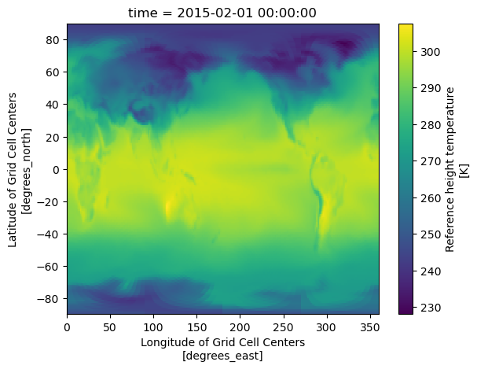

### Notebook contains code to temporarily move E3SM data to local,
### run regridding, then move regridded version back to S3
### and remove the local data.
## Alistair Duffey, Feb 26
Usage#
set output grid by selecting the map file
input list of E3SM paths on the S3 bucket that need to be regridded (as ‘hilla_paths’)
## packages for cloud data intake:
import s3fs
import fsspec
## packages for analysis
import pandas as pd
import xarray as xr
import dask
import numpy as np
import matplotlib.pyplot as plt
from functools import reduce
import os
import boto3
import xarray as xr
from urllib.parse import urlparse
import subprocess
import shutil
## needs a lot of memory (~ 8GB)
## also takes a little while
%conda install -c conda-forge nco
Channels:
- conda-forge
Platform: linux-64
doneecting package metadata (repodata.json): -
doneing environment: /
==> WARNING: A newer version of conda exists. <==
current version: 24.11.3
latest version: 26.1.0
Please update conda by running
$ conda update -n base -c conda-forge conda
## Package Plan ##
environment location: /srv/conda/envs/notebook
added / updated specs:
- nco
The following packages will be downloaded:
package | build
---------------------------|-----------------
gsl-2.7 | he838d99_0 3.2 MB conda-forge
libudunits2-2.2.28 | h40f5838_3 80 KB conda-forge
nco-5.3.3 | h657489c_0 1.8 MB conda-forge
openssl-3.6.1 | h35e630c_1 3.0 MB conda-forge
tempest-remap-2.2.0 | heeae502_5 965 KB conda-forge
------------------------------------------------------------
Total: 9.0 MB
The following NEW packages will be INSTALLED:
gsl conda-forge/linux-64::gsl-2.7-he838d99_0
libudunits2 conda-forge/linux-64::libudunits2-2.2.28-h40f5838_3
nco conda-forge/linux-64::nco-5.3.3-h657489c_0
tempest-remap conda-forge/linux-64::tempest-remap-2.2.0-heeae502_5
The following packages will be UPDATED:
openssl 3.6.0-h26f9b46_0 --> 3.6.1-h35e630c_1
Downloading and Extracting Packages:
gsl-2.7 | 3.2 MB | | 0%
openssl-3.6.1 | 3.0 MB | | 0%
nco-5.3.3 | 1.8 MB | | 0%
tempest-remap-2.2.0 | 965 KB | | 0%
libudunits2-2.2.28 | 80 KB | | 0%
libudunits2-2.2.28 | 80 KB | ##################################### | 100%
gsl-2.7 | 3.2 MB | ####################################4 | 99%
openssl-3.6.1 | 3.0 MB | #### | 11%
gsl-2.7 | 3.2 MB | ##################################### | 100%
nco-5.3.3 | 1.8 MB | ##################################### | 100%
tempest-remap-2.2.0 | 965 KB | 6 | 2%
openssl-3.6.1 | 3.0 MB | #################2 | 47%
tempest-remap-2.2.0 | 965 KB | ##################################### | 100%
nco-5.3.3 | 1.8 MB | ##################################### | 100%
nco-5.3.3 | 1.8 MB | ##################################### | 100%
openssl-3.6.1 | 3.0 MB | ##################################### | 100%
tempest-remap-2.2.0 | 965 KB | ##################################### | 100%
tempest-remap-2.2.0 | 965 KB | ##################################### | 100%
openssl-3.6.1 | 3.0 MB | ##################################### | 100%
donearing transaction: -
donefying transaction: |
doneuting transaction: |
Note: you may need to restart the kernel to use updated packages.
### code below downloads files to local from bucket, and regrids them to local
#########################
##### USER INPUTS #######
#########################
# --- CONFIGURATION ---
hilla_paths = [
's3://reflective-persistent-prod-large/E3SMv3/G6-1.5K-HiLLA/v3.LR.ssp245.g6_hilla.sai.0101/Amon/TREFHT/gn/13112025/',
's3://reflective-persistent-prod-large/E3SMv3/G6-1.5K-HiLLA/v3.LR.ssp245.g6_hilla.sai.0151/Amon/TREFHT/gn/13112025/',
's3://reflective-persistent-prod-large/E3SMv3/G6-1.5K-HiLLA/v3.LR.ssp245.g6_hilla.sai.0201/Amon/TREFHT/gn/13112025/'
's3://reflective-persistent-prod-large/E3SMv3/G6-1.5K-HiLLA/v3.LR.ssp245_0101/Amon/TREFHT/gn/13112025/',
's3://reflective-persistent-prod-large/E3SMv3/G6-1.5K-HiLLA/v3.LR.ssp245_0151/Amon/TREFHT/gn/13112025/',
's3://reflective-persistent-prod-large/E3SMv3/G6-1.5K-HiLLA/v3.LR.ssp245_0201/Amon/TREFHT/gn/13112025/',
]
# Path to your mapping file (ne30 to lat/lon)
MAP_FILE = "../shared/Data/E3SM_maps/map_ne30pg2_to_cmip6_180x360_aave.20200201.nc"
LOCAL_BASE_DIR = './E3SMv3_HiLLA_regridded'
#########################
#########################
#########################
### Set up regridding process
s3 = boto3.client('s3')
os.makedirs(LOCAL_BASE_DIR, exist_ok=True)
def run_ncremap(input_path, output_path, map_file):
"""Executes the shell command for ncremap."""
cmd = ["ncremap", "-i", input_path, "-m", map_file, "-o", output_path]
try:
subprocess.run(cmd, check=True, capture_output=True, text=True)
return True
except subprocess.CalledProcessError as e:
print(f"Error regridding {input_path}: {e.stderr}")
return False
# --- MAIN EXECUTION ---
all_datasets = []
for s3_url in hilla_paths:
parsed = urlparse(s3_url)
bucket = parsed.netloc
prefix = parsed.path.lstrip('/')
# Identify the specific ensemble/simulation name
set_name = prefix.split('/')[2]
raw_dir = os.path.join(LOCAL_BASE_DIR, set_name, 'raw')
regrid_dir = os.path.join(LOCAL_BASE_DIR, set_name, 'regridded')
os.makedirs(raw_dir, exist_ok=True)
os.makedirs(regrid_dir, exist_ok=True)
print(f"\n>>> Processing ensemble: {set_name}")
response = s3.list_objects_v2(Bucket=bucket, Prefix=prefix)
if 'Contents' not in response:
continue
for obj in response['Contents']:
key = obj['Key']
if not key.endswith('.nc'): continue
filename = os.path.basename(key)
local_raw = os.path.join(raw_dir, filename)
local_regrid = os.path.join(regrid_dir, f"regridded_{filename}")
# 1. Download
print(f" Downloading: {filename}")
s3.download_file(bucket, key, local_raw)
# 2. Regrid
print(f" Regridding: {filename}")
success = run_ncremap(local_raw, local_regrid, MAP_FILE)
# Remove raw file to save space
if success:
os.remove(local_raw)
# 3. Load the regridded set into Xarray
# We open all files in the regridded folder for this specific set
ds = xr.open_mfdataset(f"{regrid_dir}/*.nc", combine='by_coords')
all_datasets.append(ds)
print("\nAll sets processed and loaded into 'all_datasets' list.")
>>> Processing ensemble: v3.LR.ssp245_0101
Downloading: TREFHT_201501_201912.nc
Regridding: TREFHT_201501_201912.nc
Downloading: TREFHT_202001_202412.nc
Regridding: TREFHT_202001_202412.nc
Downloading: TREFHT_202501_202912.nc
Regridding: TREFHT_202501_202912.nc
Downloading: TREFHT_203001_203412.nc
Regridding: TREFHT_203001_203412.nc
Downloading: TREFHT_203501_203912.nc
Regridding: TREFHT_203501_203912.nc
Downloading: TREFHT_204001_204412.nc
Regridding: TREFHT_204001_204412.nc
Downloading: TREFHT_204501_204912.nc
Regridding: TREFHT_204501_204912.nc
Downloading: TREFHT_205001_205412.nc
Regridding: TREFHT_205001_205412.nc
Downloading: TREFHT_205501_205912.nc
Regridding: TREFHT_205501_205912.nc
Downloading: TREFHT_206001_206412.nc
Regridding: TREFHT_206001_206412.nc
Downloading: TREFHT_206501_206912.nc
Regridding: TREFHT_206501_206912.nc
Downloading: TREFHT_207001_207412.nc
Regridding: TREFHT_207001_207412.nc
Downloading: TREFHT_207501_207912.nc
Regridding: TREFHT_207501_207912.nc
Downloading: TREFHT_208001_208412.nc
Regridding: TREFHT_208001_208412.nc
>>> Processing ensemble: v3.LR.ssp245_0151
Downloading: TREFHT_201501_201912.nc
Regridding: TREFHT_201501_201912.nc
Downloading: TREFHT_202001_202412.nc
Regridding: TREFHT_202001_202412.nc
Downloading: TREFHT_202501_202912.nc
Regridding: TREFHT_202501_202912.nc
Downloading: TREFHT_203001_203412.nc
Regridding: TREFHT_203001_203412.nc
Downloading: TREFHT_203501_203912.nc
Regridding: TREFHT_203501_203912.nc
Downloading: TREFHT_204001_204412.nc
Regridding: TREFHT_204001_204412.nc
Downloading: TREFHT_204501_204912.nc
Regridding: TREFHT_204501_204912.nc
Downloading: TREFHT_205001_205412.nc
Regridding: TREFHT_205001_205412.nc
Downloading: TREFHT_205501_205912.nc
Regridding: TREFHT_205501_205912.nc
Downloading: TREFHT_206001_206412.nc
Regridding: TREFHT_206001_206412.nc
Downloading: TREFHT_206501_206912.nc
Regridding: TREFHT_206501_206912.nc
Downloading: TREFHT_207001_207412.nc
Regridding: TREFHT_207001_207412.nc
Downloading: TREFHT_207501_207912.nc
Regridding: TREFHT_207501_207912.nc
Downloading: TREFHT_208001_208412.nc
Regridding: TREFHT_208001_208412.nc
>>> Processing ensemble: v3.LR.ssp245_0201
Downloading: TREFHT_201501_201912.nc
Regridding: TREFHT_201501_201912.nc
Downloading: TREFHT_202001_202412.nc
Regridding: TREFHT_202001_202412.nc
Downloading: TREFHT_202501_202912.nc
Regridding: TREFHT_202501_202912.nc
Downloading: TREFHT_203001_203412.nc
Regridding: TREFHT_203001_203412.nc
Downloading: TREFHT_203501_203912.nc
Regridding: TREFHT_203501_203912.nc
Downloading: TREFHT_204001_204412.nc
Regridding: TREFHT_204001_204412.nc
Downloading: TREFHT_204501_204912.nc
Regridding: TREFHT_204501_204912.nc
Downloading: TREFHT_205001_205412.nc
Regridding: TREFHT_205001_205412.nc
Downloading: TREFHT_205501_205912.nc
Regridding: TREFHT_205501_205912.nc
Downloading: TREFHT_206001_206412.nc
Regridding: TREFHT_206001_206412.nc
Downloading: TREFHT_206501_206912.nc
Regridding: TREFHT_206501_206912.nc
Downloading: TREFHT_207001_207412.nc
Regridding: TREFHT_207001_207412.nc
Downloading: TREFHT_207501_207912.nc
Regridding: TREFHT_207501_207912.nc
Downloading: TREFHT_208001_208412.nc
Regridding: TREFHT_208001_208412.nc
All sets processed and loaded into 'all_datasets' list.
## above code saves a local temp copy, regrids to a second local temp copy
## below reads in all those regridded temp copies, and writes to a single netcdf file
dirs = os.listdir('hilla_regridded/')
for run in dirs[2:]:
print(run)
filename = os.listdir('hilla_regridded/{}/regridded/'.format(run))[0]
print(filename)
out_path = 'hilla_regridded/{r}/regridded_combined/'.format(r=run)
os.makedirs(out_path, exist_ok=True)
ds = xr.open_mfdataset('hilla_regridded/{}/regridded/*.nc'.format(run))
ds.to_netcdf(out_path + filename)
ds.close()
print('local combined copy written')
## then put the file on the s3 bucket too:
DEST_BUCKET = 'reflective-persistent-prod'
dest_key = 'alistairduffey/E3SMv3/regridded_combined/{r}/{f}'.format(r=run, f=filename)
s3.upload_file(out_path + filename, DEST_BUCKET, dest_key)
print('uploaded combined to S3')
## verify the upload completed successfully by checking the object exists and size matches:
local_size = os.path.getsize(out_path + filename)
s3_obj = s3.head_object(Bucket=DEST_BUCKET, Key=dest_key)
s3_size = s3_obj['ContentLength']
if s3_size != local_size:
raise RuntimeError(
'S3 upload size mismatch for {f}: local={l}, s3={s}'.format(
f=filename, l=local_size, s=s3_size
)
)
print('S3 upload verified (size match: {} bytes)'.format(s3_size))
## delete local regridded (individual) files:
regridded_dir = 'hilla_regridded/{}/regridded/'.format(run)
shutil.rmtree(regridded_dir)
print('local regridded files deleted')
## delete local regridded_combined file and directory:
os.remove(out_path + filename)
os.rmdir(out_path)
print('local regridded_combined files deleted')
v3.LR.ssp245.g6_hilla.sai.0201
regridded_TREFHT_203501_203912.nc
local combined copy written
uploaded combined to S3
S3 upload verified (size match: 472659492 bytes)
local regridded files deleted
local regridded_combined files deleted
v3.LR.ssp245_0101
regridded_TREFHT_201501_201912.nc
local combined copy written
uploaded combined to S3
S3 upload verified (size match: 661708439 bytes)
local regridded files deleted
local regridded_combined files deleted
v3.LR.ssp245_0151
regridded_TREFHT_201501_201912.nc
local combined copy written
uploaded combined to S3
S3 upload verified (size match: 661708439 bytes)
local regridded files deleted
local regridded_combined files deleted
v3.LR.ssp245_0201
regridded_TREFHT_201501_201912.nc
local combined copy written
uploaded combined to S3
S3 upload verified (size match: 661708439 bytes)
local regridded files deleted
local regridded_combined files deleted
## test reading in one of the combined regridded files on persistent-prod
s3_path = 's3://reflective-persistent-prod/'+dest_key
# Open the dataset directly from the S3 URL using xarray
with fsspec.open(s3_path, mode='rb') as file:
ds = xr.open_dataset(file, engine="h5netcdf", chunks={}).load()
ds.TREFHT.isel(time=0).plot()
<matplotlib.collections.QuadMesh at 0x7fbe197c94c0>
